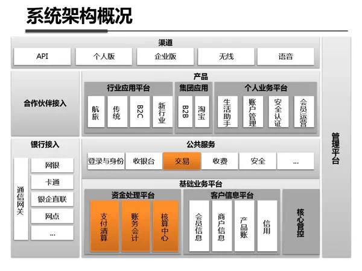

目录 [−]
本文转载于网上的文章 《最全最强解析：支付宝系统架构内部剖析（架构图）》。 最早的出处没有找到，原文作者也未知。 如果你知道请告诉我。
支付宝系统架构概况

典型处理默认
资金处理平台
财务会计
支付清算
核算中心
交易
柔性事务
消息系统
数据分布
数据缓存
支付宝技术产品线
支付宝的开源分布式消息中间件–Metamorphosis(MetaQ)
貌似原发起者离开了阿里，现在这个项目改名为RocketMQ
Metamorphosis (MetaQ) 是一个高性能、高可用、可扩展的分布式消息中间件，类似于LinkedIn的Kafka，具有消息存储顺序写、吞吐量大和支持本地和XA事务等特性，适用 于大吞吐量、顺序消息、广播和日志数据传输等场景，在淘宝和支付宝有着广泛的应用，现已开源。
Metamorphosis是淘宝开源的一个Java消息中间件。关于消息中间件，你应该听说过JMS规范，以及一些开源实现，如ActiveMQ和HornetQ等。Metamorphosis也是其中之一。
Metamorphosis 的起源是我从对linkedin的开源MQ–现在转移到apache的kafka的学习开始的，这是一个设计很独特的MQ系统，它采用pull机制，而 不是一般MQ的push模型，它大量利用了zookeeper做服务发现和offset存储，它的设计理念我非常欣赏并赞同，强烈建议你阅读一下它的设计 文档，总体上说metamorphosis的设计跟它是完全一致的。但是为什么还需要meta呢？
简单概括下我重新写出meta的原因：
1.Kafka是scala写，我对scala不熟悉，并且kafka整个社区的发展太缓慢了。
2.有一些功能是kakfa没有实现，但是我们却需要：事务、多种offset存储、高可用方案(HA)等
3.Meta相对于kafka特有的一些功能：
-文本协议设计，非常透明，支持类似memcached stats的协议来监控broker
-纯Java实现，从通讯到存储，从client到server都是重新实现。
-提供事务支持，包括本地事务和XA分布式事务
-支持HA复制，包括异步复制和同步复制，保证消息的可靠性
-支持异步发送消息
-消费消息失败，支持本地恢复
-多种offset存储支持，数据库、磁盘、zookeeper，可自定义实现支持group commit，提升数据可靠性和吞吐量。
-支持消息广播模式
-一系列配套项目：python客户端、twitter storm的spout、tail4j等。
因此meta相比于kafka的提升是巨大的。meta在淘宝和支付宝都得到了广泛应用，现在每天支付宝每天经由meta路由的消息达到120亿，淘宝也有每天也有上亿的消息量。
Meta适合的应用：
-日志传输，高吞吐量的日志传输本来就是kafka的强项；
-消息广播功能，如广播缓存配置失效；
-数据的顺序同步功能，如mysql binlog复制；
-分布式环境下（broker,producer,consumer都为集群）的消息路由，对顺序和可靠性有极高要求的场景；
-作为一般MQ来使用的其他功能。